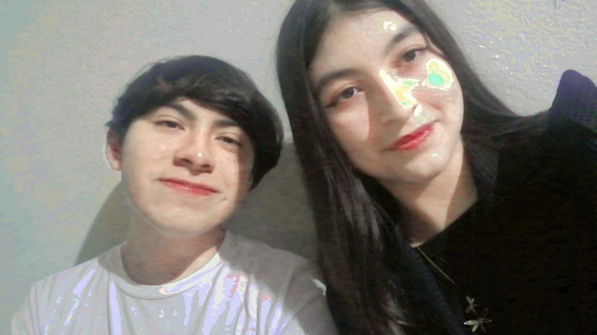
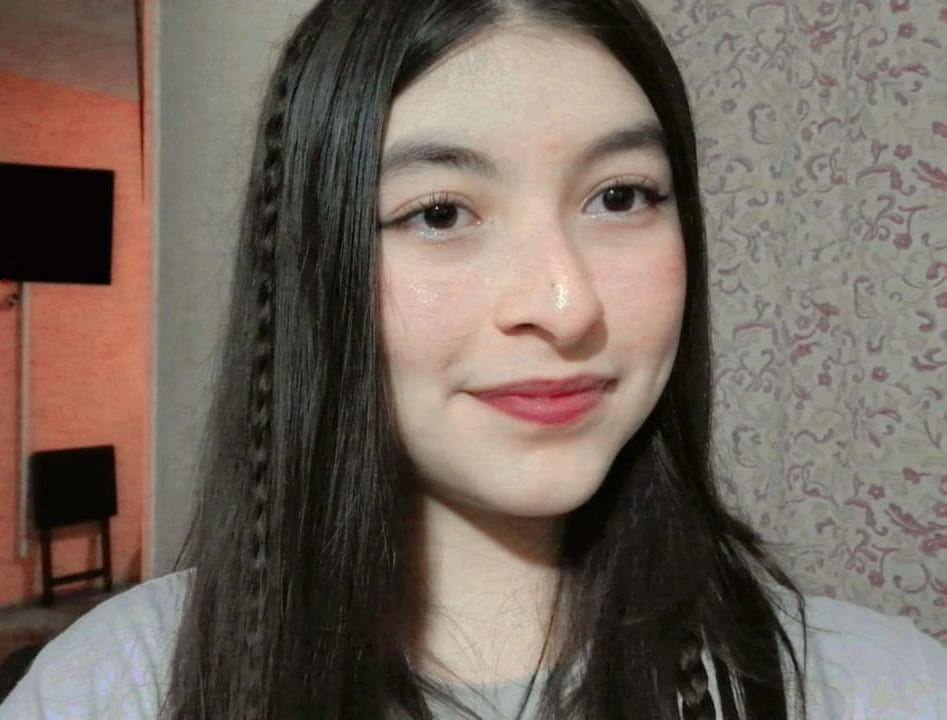
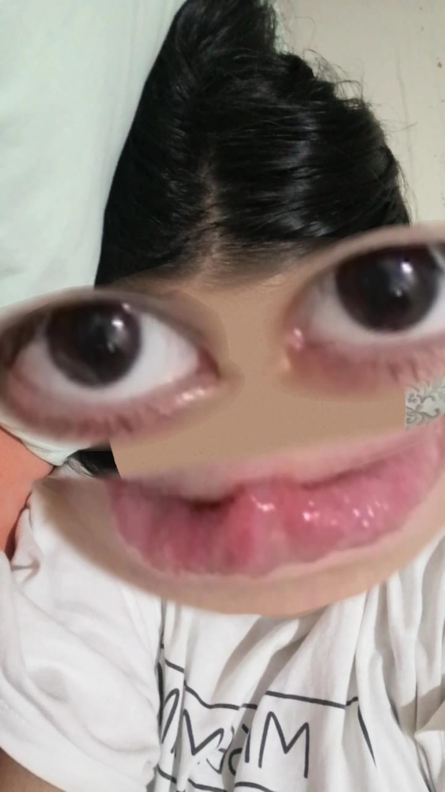
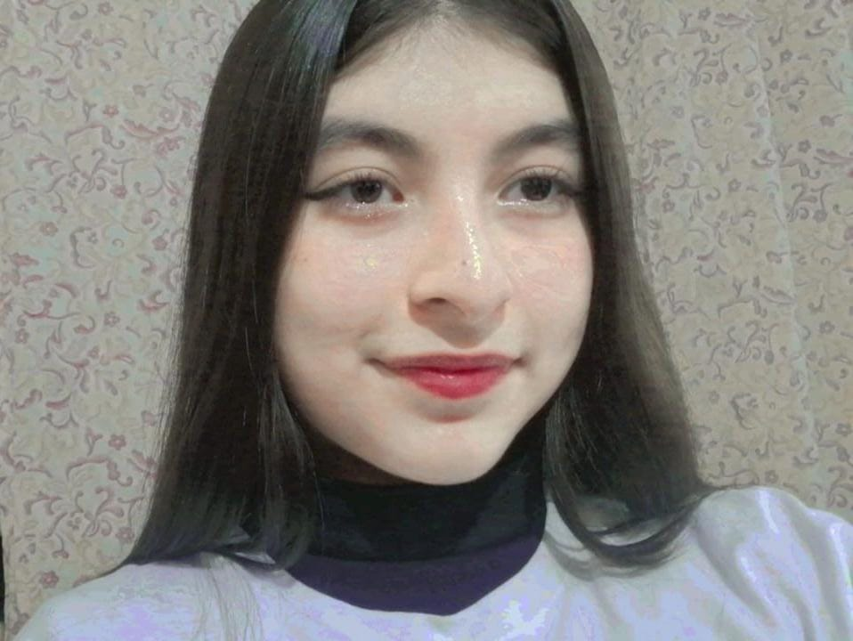
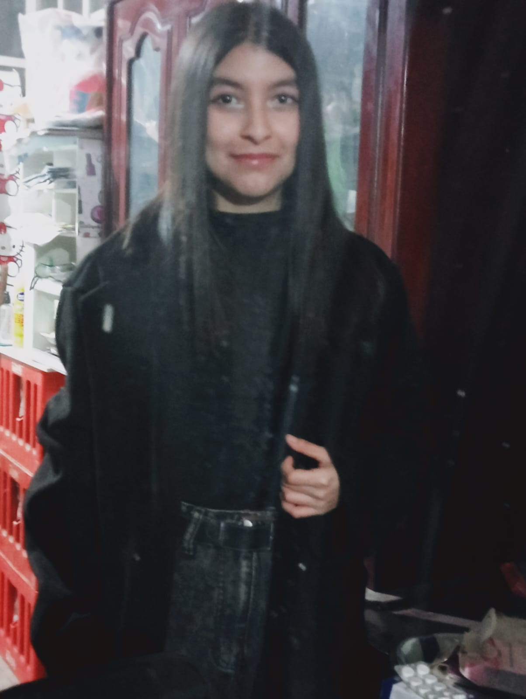
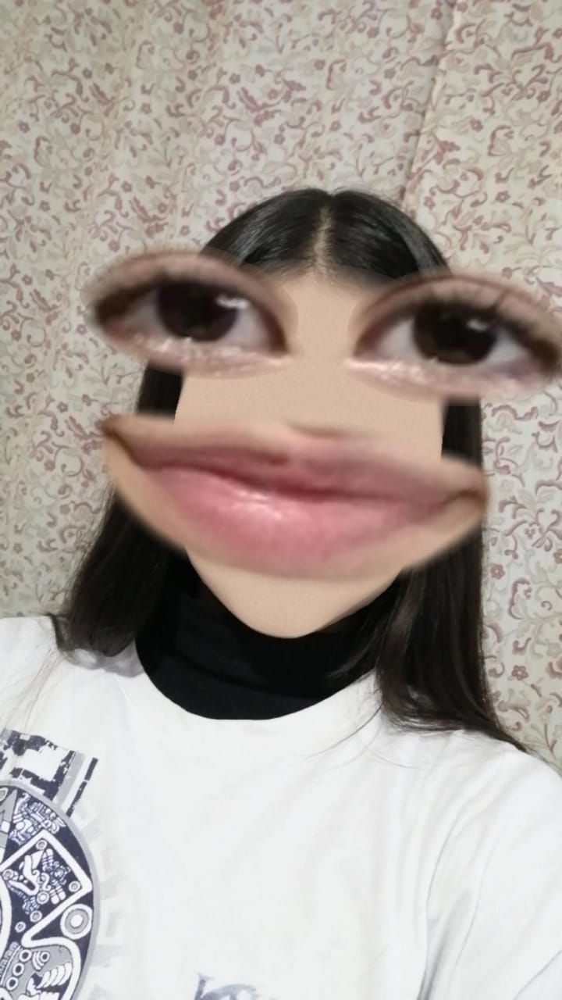
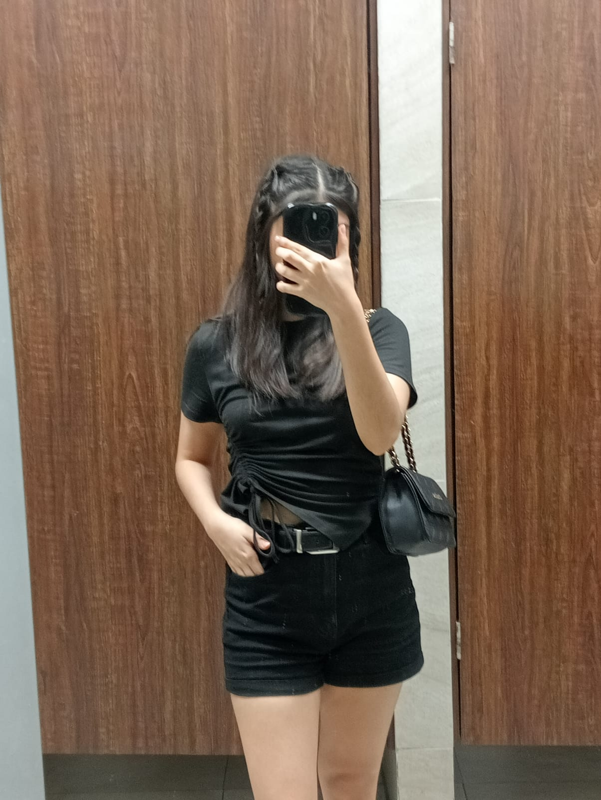
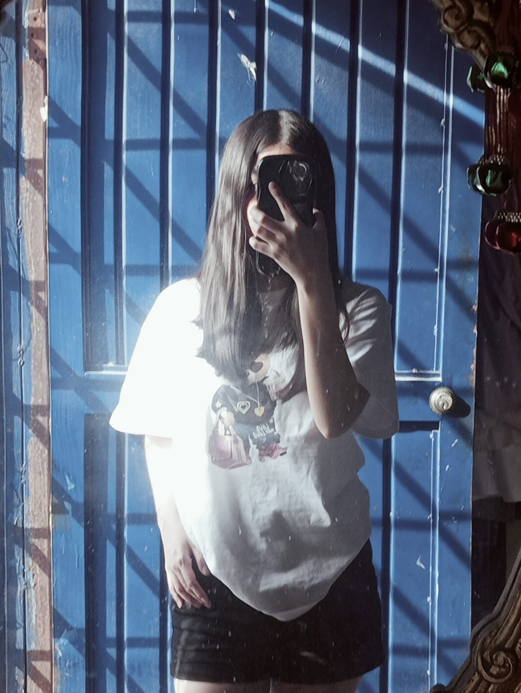
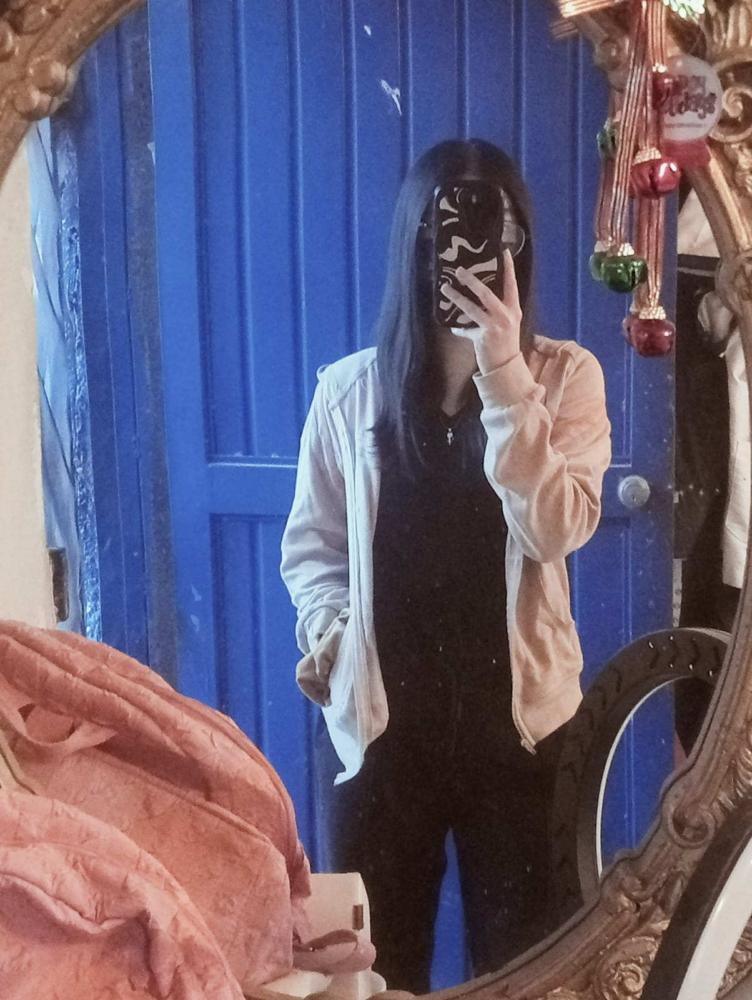
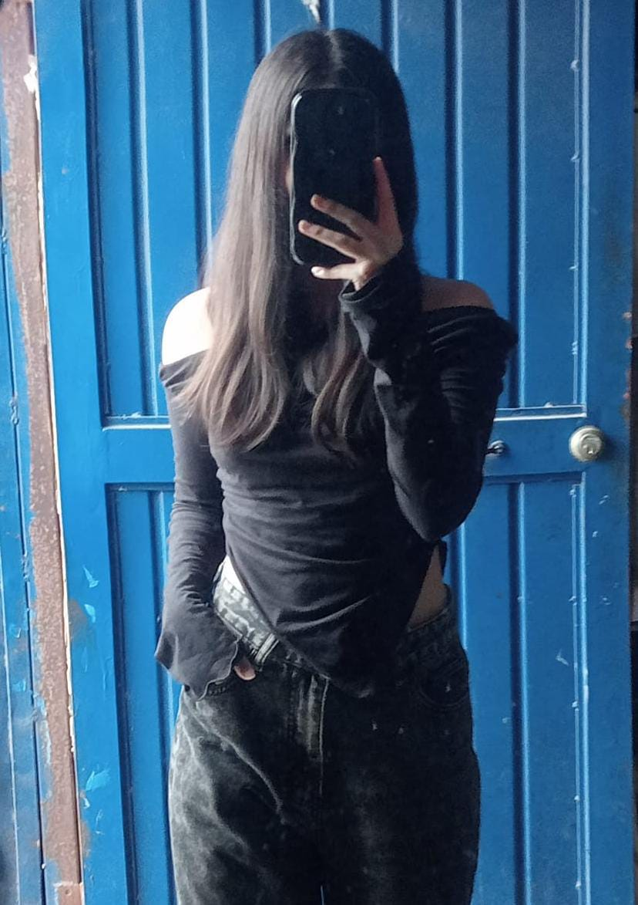
Todo este tiempo que llevamos ha sido lo mejor que me ha pasado sin duda, desde que te conoci todo me fue bienn siempre me estas apoyando, dando cariño, alegrando mis dias, dandome detalles que nadie me habia hecho, encerio gracias por todo lo que has hecho por miiii, no se como agradecerte porque es bastante lo que haces por mi y cuando digo que te quiero dar todo voy encerio hare hasta lo imposible para mantenerte muyyy felizz yy que nuestros hijos siempre recuerden a su padre como el hombre perfecto para su mama<333
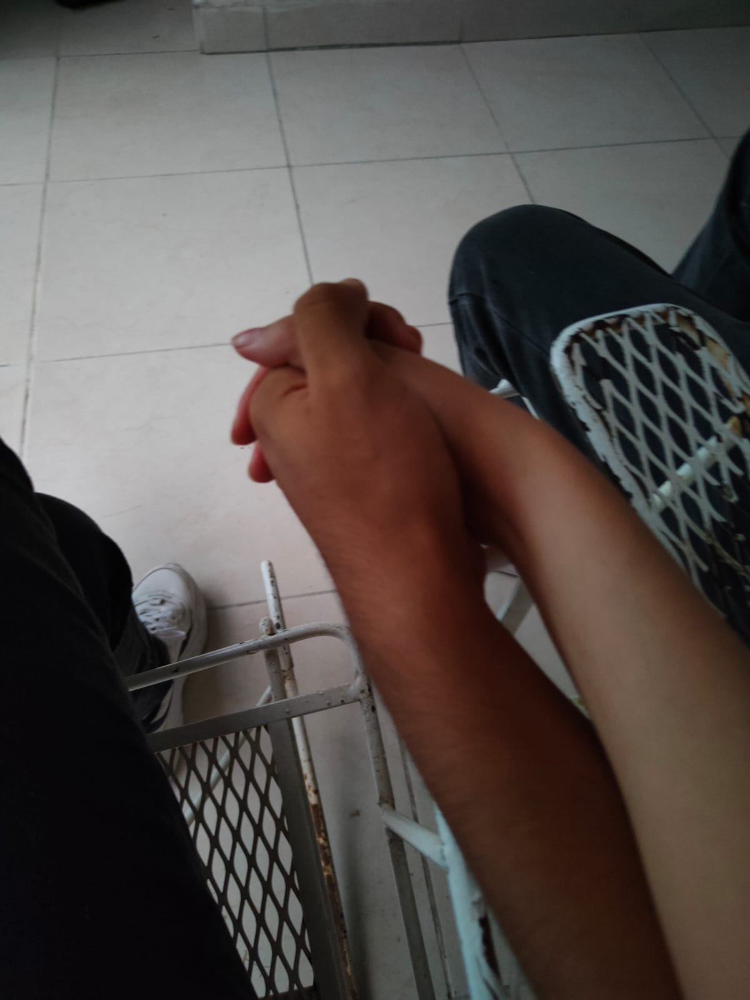